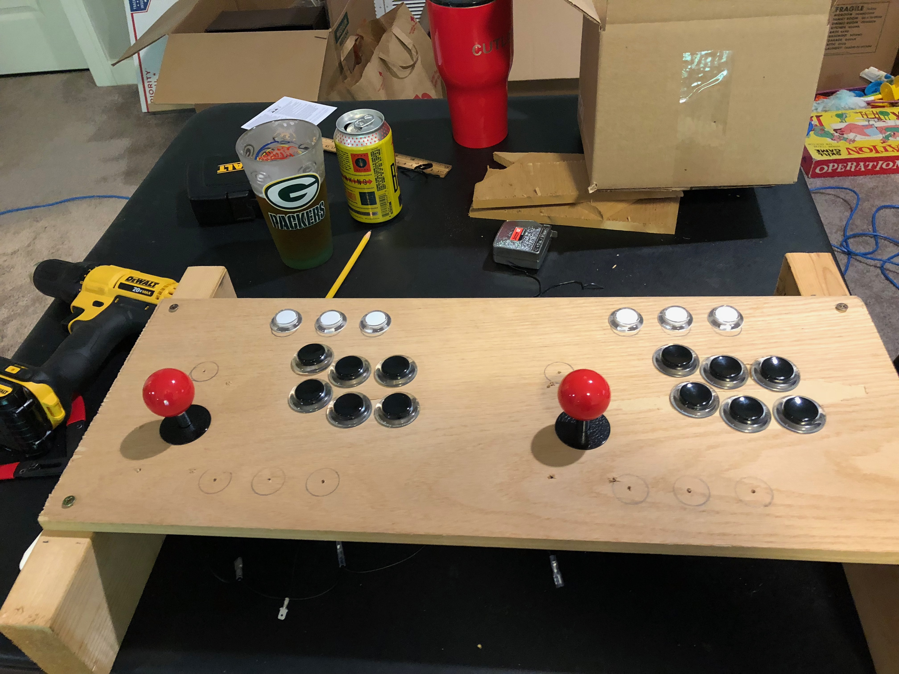
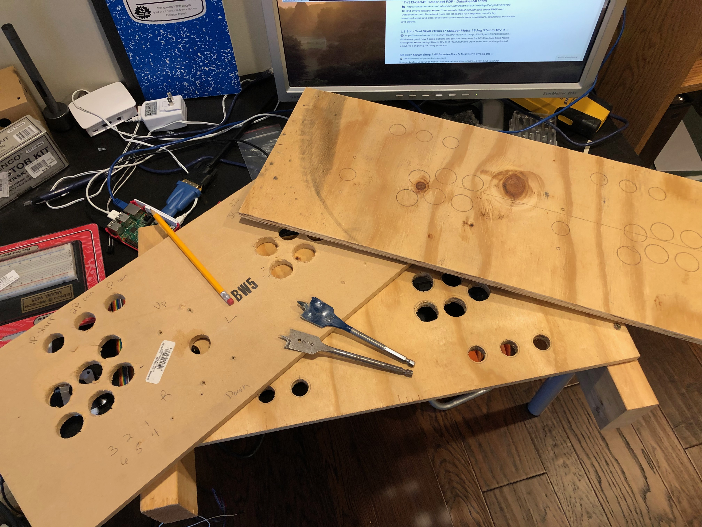

Control Panel Prototypes
If I don’t improve my attention to detail, I’m going to waste a lot of time and money. Case in point: just trying to build a prototype for the control panel so I can figure out how to use the Ipac controller and arcade buttons.
The first prototype I built 18 months ago I built upside down. I tried to fix it, but it was just uncomfortable to use.

The second control panel I drilled the holes the wrong size. I thought the normal size for an arcade button was a 1" hole - it is not, it is a 1 1/8" hole. So that board got tossed. Thankfully this is all old wood we had lying around that’s fair game for stuff like this.
The third time was not the charm. Even though I took the arcade buttons with me to the garage where I was drillign the holes, after I cut the first couple and inserted the buttons to double check - and I got it right up until that point - I then went on to drill a number of holes too small again. I need to slow down and pay attention.
And for the record, I need 1" holes for the 1P / 2P smaller buttons and 1 1/8" holes for the normal arcade buttons.
